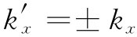
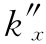
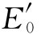

现在可以把前面的边界条件应用于§33-2中写下的波。我们曾有：
另外，还有一点知识：对于每一个波，E垂直于其传播矢量k。
结果将取决于该入射波的E矢量方向（偏振）。如果我们把入射波具有平行 于“入射面”（即xy面）的E矢量的情况与入射波具有垂直 于入射面的E矢量的情况分开处理，那么分析起来就会简单得多。任何其他偏振的波都不过是这两种波的线性组合。换句话说，反射与透射强度对于不同的偏振是不同的，而最容易做的是选出这两种最简单的情况而加以分别处理。
我们将对一个垂直于入射面偏振的入射波进行分析，然后对另一种情况只给出结果。通过选取这种最简单情况我们似乎未免有点不老实，但在原理上两者都是一样的。因此我们假定Ei 只有一个z分量，而既然所有的E矢量都在同一个方向上，就可取消矢量的符号。
只要两种材料都是各向同性的，那么材料里电荷的感生振动也将沿着z方向，而透射与反射波的E场也将各只有一个z分量。因此，对于所有的波，Ex 和Ey 以及Px 和Py 都等于零。那些波的E和B矢量如图33-6所示（这里对于原来想要从微分方程组得到一切的计划来说我们是抄了一条近路。这些结果也可从边界条件得到，但通过利用物理论证我们可以省去许多代数运算。如果你有些空闲时间，不妨试试能否从那些方程获得同样的结果。很清楚，我们上面所说的一切都与那些方程相一致，只是我们还没有证明不存在别的 可能性而已）。
图33-6 当入射波的E场垂直于入射面时，反射波和透射波的偏振情形
现在从式（33.26）至（33.31）的边界条件给出区域1与区域2中E和B各分量间的关系。在区域2中只有那透射波，而在区域1中则有两种 波。我们要用哪一种波呢？当然，在区域1中的场等于入射波与反射波两个场的叠加（由于每个场都满足麦克斯韦方程组，因而两者之和亦然）。所以当我们应用边界条件时，就必须用到
E1 =Ei +Er ， E2 =Et ，
对于B的情况来说，也与此相仿。
对我们正在考虑的偏振而言，式（33.26）和（33.28）不会提供任何新的知识，只有式（33.27）才有用处。它表明：在边界上 ，也就是在x=0处，
Ei +Er =Et .
因此我们就有
上式必须对一切的t和所有的y都正确。假设首先考察在y=0处的情况，此时我们有
这一方程表明，两个振动项之和等于第三个振动项，这只有当所有的振动都具有相同频率时才能出现（三个——或任何数目的——具有不同频率的这种项相加在任何时刻都为零，这是不可能的）。因此
ω″=ω′=ω. （33.39）
正如我们过去一直都知道的那样，反射波及透射波的频率与入射波的相同。
其实一开始我们就可以将这一条件放进去以避免一些麻烦，但希望向你们证明它也可以从那些方程式得出。当你正在做实际的问题时，往往最好一开头就把你所知道的每件事都正确地放到计算中去，从而使你避免许多麻烦。
根据定义，k的大小 由k2 =n2 ω2 /c2 给出，因而也就有
现在我们来考察t=0时的式（33.38）。再度利用刚才所做的相同类型的论证，但这一次是建筑在该方程必须对所有y值都满足这个事实基础上的，因而得
（33.41）
由式（33.40），即 ，所以得
将此式与（33.41）相结合，我们有
即 。正号不构成任何意义，它不会给出反射 波，却给出另一个入射 波，而我们一开始就说过正在解只有一个入射波的问题，所以我们有
（33.42）
式（33.41）和（33.42）向我们提供了反射角等于入射角的结论，正如所期待的（见图33-3）那样，反射波为
暂时假定n1 和n2 都是实数（即两折射率的虚部都十分微小），那么所有的k也都是实数，并从图33-3求得
又由式（33.44），我们得到
n2 sinθt =n1 sinθi ， （33.47）
这就是斯涅耳折射定律——又是我们熟悉的某种东西。如果折射率不是实数，则波数将是复数，而我们就得用到式（33.45）［仍然能够通过式（33.46）来定义 角度θi 和θt 。而式（33.47）即斯涅耳方程大体上也应该正确。但此时“角度”也是复数，因而丧失了作为角度的简单几何解释。于是，最好是通过它们的复数kx 或 的值来描述那些波的行为］。
迄今为止，我们没有发现任何新的东西。只是从复杂的数学方法中得到了某些明显答案而感到一种纯朴的喜悦。现在我们准备求出还不知道的波幅。利用关于ω和k的结果，式（33.38）中的指数因子就可以消去，因而我们得到
（33.48）
由于 都属未知，所以就需要另一个关系式。我们必须引用另一个边界条件。有关Ex 和Ey 的那些方程都无能为力，因为所有的E都只有一个z分量。因此，必须用到关于B的那些条件。让我们试一试式（33.29）：
Bx2 =Bx1 .
根据式（33.35）至（33.37），
但这恰好又是式（33.48）！我们不过在为得到已知的某些东西而浪费时间。
可以试一试式（33.30），即Bz2 =Bz1 ，但却没有B的z分量！因此剩下来的就只有一个方程：即式（33.31），By2 =By1 。对于那三个波：
把x=0处（即在边界上）波的表示式作为Ei ，Er 和Et 代入，则边界条件为
而且所有的ω和所有的ky 都相等，因而上式将简化成
这为我们提供了一个不同于式（33.48）的有关E的方程。有了这两个式，便可解出 了。由于 ，我们得
这些，再加上关于 的式（33.45）或（33.46），便向我们提供了想要知道的东西。将在下一节中讨论这一答案的后果。
如果从一开始就设偏振波的E矢量平行 于入射面，则E将有x和y两分量，如图33-7所示。代数运算虽然直截了当，但较为复杂点（在这种情况下通过用全都沿z方向的磁 场B来表示，工作量会稍为减轻些）。人们求得
图33-7 当入射波的E场平行于入射面时各波的偏振情形
让我们来看看，上述结果是否与我们以前得到的相符。式（33.3）就是在第1卷第33章中我们曾经算出来的关于反射波与入射波强度的比。然而，我们当时只考虑了实数 折射率。对于实数折射率（以及实数k）来说，就可以写成
看来上式还是与式（33.3）不同。然而，如果我们运用斯涅耳定律以消去那些n，则两式就会相同。即令n2 =n1 sinθi /sinθt ，并对上式中的分子和分母各乘以sinθt ，便得
分子和分母都仅是-（θi -θt ）和（θi +θt ）的正弦，因而得到
由于 和E0 都在同一种材料中，强度都正比于其电场的平方，所以我们就得到与以前相同的结果。同理，式（33.53）也与式（33.4）相同。
对于沿法向入射的波，θi =0和θt =0。式（33.56）便给出0/0，那不是十分有用的。然而，我们可以回到式（33.55）上去，它会给出
自然，这一结果适用于上述两者中的“任一种”偏振，因为对于法向入射来说不存在特殊的“入射面”。